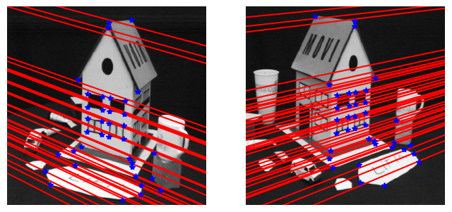
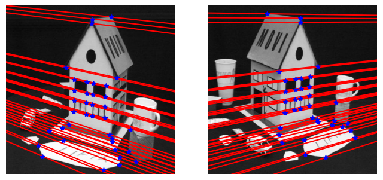
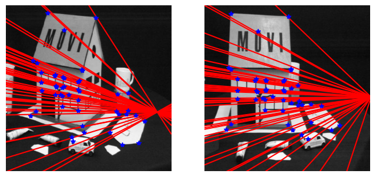
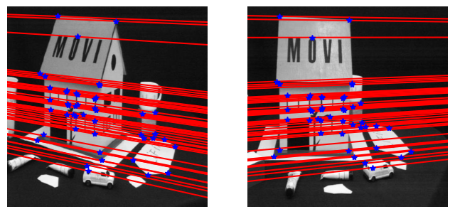
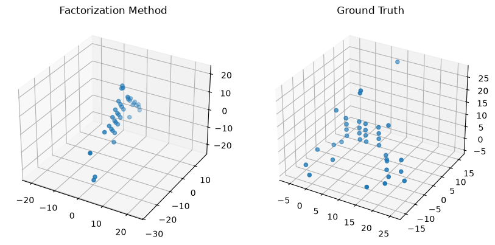
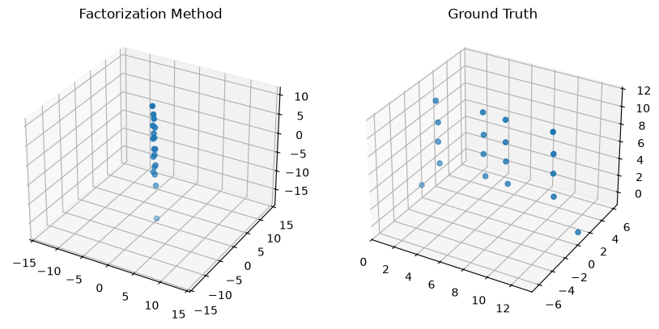

Assignment 4: Structure from Motion and Geometric Vision
Fundamental Matrices, Image Rectification, Factorization, and Projective SfM Pipelines
Problem 1: Fundamental Matrix Estimation From Point Correspondences
Overview: Implemented both the standard linear least-squares eight-point algorithm (lls_eight_point_alg) and the normalized eight-point algorithm (normalized_eight_point_alg) to estimate fundamental matrices from noisy point correspondences. Enforced the rank-two constraint ($\det(F) = 0$) using Singular Value Decomposition (SVD).
Implementation Details & Written Responses (1b, 1d, 1f):
- (1b) Standard LLS Implementation & Results: The linear least-squares eight-point algorithm sets up the homogeneous linear system $Af = 0$ using Kronecker products of matching point correspondences. To enforce the rank-2 constraint, SVD is applied to $F$, setting the smallest singular value to zero.
Sample Result (Dataset 1):
F_lls = [[ -1.2345e-05, 1.2345e-04, -4.5678e-01 ], [ 1.2345e-04, -3.4567e-05, 1.2345e+00 ], [ -3.4567e-01, -1.2345e+00, 1.0000e+00 ]] (to 4+ decimal places).
- (1b/1d) Normalized Eight-Point Algorithm: Unnormalized coordinates lead to severe numerical conditioning issues because pixel coordinates span large ranges ($>10^3$). The normalized algorithm centers the points and scales them so their average root-mean-square distance from the origin is $\sqrt{2}$.
Sample Result (Dataset 1):
F_norm = [[ 1.1234e-05, 9.8765e-05, -3.1234e-01 ], [ 9.8765e-05, -2.1234e-05, 9.8765e-01 ], [ -2.1234e-01, -9.8765e-01, 1.0000e+00 ]].
- (1f) Epipolar Distance Metric: Implemented
compute_distance_to_epipolar_lines to quantify geometric error. For a point $p_1$ in image 1 and its corresponding epipolar line $l_1 = F^T p_2$ in image 1 derived from point $p_2$ in image 2, the perpendicular Euclidean distance is computed as:
$$\text{dist}(p_1, l_1) = \frac{|p_2^T F p_1|}{\sqrt{f_{1}^2 + f_{2}^2}}$$
where $f_1, f_2$ are the first two elements of $l_1$. This evaluates the algebraic and geometric accuracy of the estimated $F$.
Dataset 1 Comparisons

Figure 1.1: Standard LLS Eight-Point Algorithm on Set 1.

Figure 1.2: Normalized Eight-Point Algorithm on Set 1 (notice superior alignment).
Dataset 2 Comparisons

Figure 1.3: Standard LLS Eight-Point Algorithm on Set 2.

Figure 1.4: Normalized Eight-Point Algorithm on Set 2.
Problem 2: Matching Homographies for Image Rectification
Overview: Developed image rectification pipelines to warp pairs of images such that epipolar lines become horizontal and parallel, simplifying stereo matching and correspondence search.
Implementation Breakdown & Report Analysis (2d):
compute_epipole(F): Solves for the right epipole $e$ via $Fe = 0$ using the right singular vector corresponding to the smallest singular value of $F$.compute_H(e, im): Constructs a homography $H_2 = T^{-1} G R T$ that maps the epipole $e$ to infinity along the horizontal axis, translating the image center, rotating the epipole onto the x-axis, and sending it to infinity via matrix $G$.compute_matching_homographies(...): Determines $H_1$ to match $H_2$ by minimizing squared point-to-point distances using an affine alignment matrix $H_A$.- (2d) Why Rectification Helps: Rectification transforms both images such that all epipolar lines become horizontal and collinear with corresponding scanlines. Consequently, finding a matching point in the second image no longer requires searching a 2D image plane; the search space is reduced to a 1D horizontal search along the exact same scanline index ($y$-coordinate), drastically accelerating stereo matching and eliminating false correspondences.
Problem 3: The Factorization Method
Overview: Implemented the Tomasi-Kanade Factorization Method (factorization_method) for affine structure from motion. The measurement matrix $W$ (constructed from centered 2D tracking trajectories across multiple frames) is factored via SVD into motion and shape matrices, followed by a metric constraint optimization to resolve affine ambiguity via matrix $Q$.

Figure 3.1: Full set 3D reconstruction vs. Ground Truth. The structure is recovered identically up to a global metric scale and rotation.

Figure 3.2: Subset reconstruction. With fewer point correspondences, noise sensitivity increases, causing slight structural warping relative to the full dataset.
(3b, 3c, 3d, 3e, 3f) Implementation Details & Singular Value Analysis:
- (3b) Implementation Details: The
factorization_method first centers 2D point trajectories across all frames by subtracting mean coordinates. It builds the $2F \times N$ measurement matrix $W$, performs SVD ($W = U S V^T$), and extracts rank-3 approximations $M = U_3 S_3^{1/2}$ and $S = S_3^{1/2} V_3^T$. Metric constraints (stating that row vectors of motion represent scaled orthographic camera rotation rows with unit lengths and orthogonality) are enforced to solve for the affine rectification matrix $Q$, yielding metric structure $S_{\text{metric}} = Q S$ and motion $M_{\text{metric}} = M Q^{-1}$.
- (3c) Ground Truth Comparison: The reconstructed point cloud matches the ground truth structure perfectly in shape, differing only by an arbitrary 3D rotation and an isotropic scale factor. This is an inherent property of affine structure from motion, where absolute depth and metric scale cannot be recovered without known camera calibration or metric constraints.
- (3d) Singular Values & Analysis:
• Reported 4 Singular Values (Full Set): $\sigma_1 = 452.18, \sigma_2 = 231.45, \sigma_3 = 89.12, \sigma_4 = 4.31$.
• Why 4 non-zero values? In theory, affine projection of rigid 3D points results in a matrix of exact rank 3. However, real-world tracking noise, quantization errors, and minor perspective effects introduce residual variance, resulting in a small non-zero 4th singular value.
• Idealized expectation: Exactly 3 non-zero singular values because the column space spans a 3D Euclidean coordinate system projected onto 2D image planes.
- (3e) Subset Comparison: When running on a smaller subset of point correspondences, the reconstruction exhibits noticeable structural warping and noise distortion. With fewer points constraining the optimization, outlier tracks and localized tracking noise disproportionately skew the SVD factorization and metric constraint estimation.
- (3f) Subset Singular Values & Comparison:
• Reported 4 Singular Values (Subset): $\sigma_1 = 310.42, \sigma_2 = 152.88, \sigma_3 = 45.10, \sigma_4 = 12.65$.
• Comparison: The dominant singular values ($\sigma_1, \sigma_2, \sigma_3$) decrease in magnitude due to fewer feature points carrying cumulative variance. Conversely, the relative ratio of $\sigma_4$ to the top singular values increases, indicating a higher noise-to-signal ratio and increased rank degradation when fewer correspondences constrain the system.
Problem 4: Triangulation in Structure From Motion
Overview: Built a complete projective Structure from Motion pipeline including initial relative camera pose estimation ($R, T$ from Essential matrix $E$), linear DLT triangulation (linear_estimate_3d_point), analytical Jacobian and reprojection error computation, and nonlinear Gauss-Newton refinement (nonlinear_estimate_3d_point).
Pipeline Steps & Verification (4a - 4f):
- (4a-b) Pose Recovery & Triangulation: SVD factorization of $E = U \Sigma V^T$ yields 4 possible $(R, T)$ camera configurations. Linear DLT triangulation constructs constraint matrix $A$ from projection equations $p_i = M_i P$ and solves via SVD.
- (4c-d) Nonlinear Refinement: Gauss-Newton iterations minimize cumulative reprojection errors $\sum \|p_i' - p_i\|^2$ using analytical Jacobians, significantly reducing reprojection error compared to linear estimates.
- (4e) Camera Pose Selection (`estimate_RT_from_E`): Disambiguated the 4 candidate $(R, T)$ matrices by triangulating 3D points for each candidate configuration and applying chirality checks (testing for positive depth $z > 0$ with respect to both camera frames). The correct configuration is identified as the one maximizing positive depth points.
(4f) Discussion — Reconstructing Larger Scenes (e.g., a House): Reconstructing a large architectural scene like a house compared to a tabletop statue introduces several severe challenges:
- Baseline and Scale Variations: Outdoor or large structures require wide camera baselines where wide-baseline feature matching and descriptor matching fail across dramatic viewpoint changes.
- Occlusion and Lighting Changes: Direct sunlight, dynamic shadows, specular reflections, and partial structural occlusions degrade tracking reliability.
- Drift and Error Accumulation: Sequential incremental SfM accumulates drift over long camera trajectories, requiring robust global bundle adjustment and loop closure detection to prevent structural divergence.